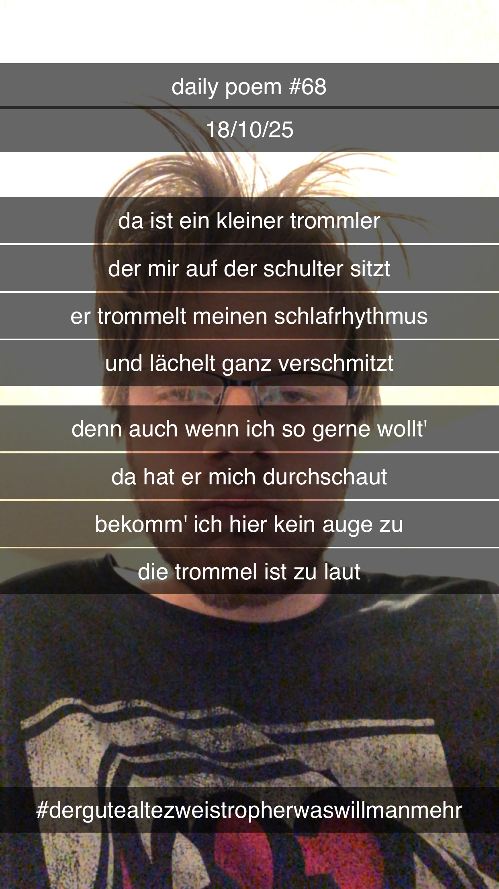

Der kleine Trommler
Da ist ein kleiner Trommler,
Der mir auf der Schulter sitzt;
Er trommelt meinen Schlafrhythmus,
Und lächelt ganz verschmitzt –
Denn auch wenn ich so gerne wollt',
Da hat er mich durchschaut,
Bekomm' ich hier kein Auge zu –
Die Trommel ist zu laut!
